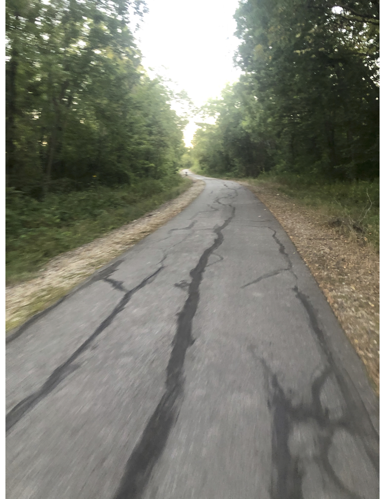
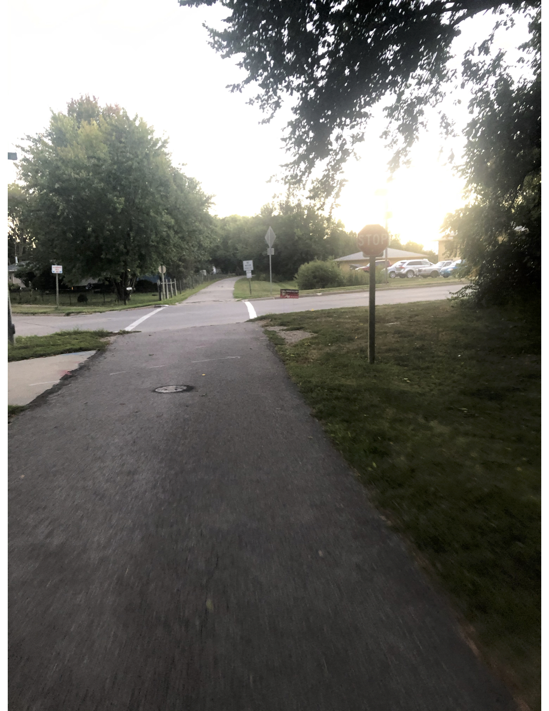

The Summerset Trail is 12 miles from Carlisle to Indianola. While mostly a flat trail, there is a slight incline for the last couple miles when traveling to Indianola. The trails hosts walkers/runners and bikers, as well as snowshoeing & cross country skiing in the winter time. Visitors will cross many bridges through prairie, wetland, & woodland areas.
|  |  |
|---|